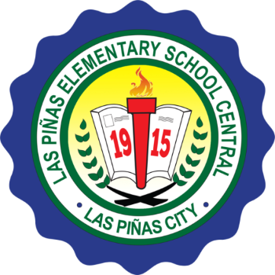

Schools
Attended
| School/University | Year Attended | |
|---|---|---|
|  | Las Pinas Elementary School (Central) | 2007-2013 |
| Las Pinas National Highscool (Main) | 2013-2017 | |
 |
NAIC National Highscool (Main) | 2017-2019 |
 |
Cavite State University (Main) | 2017-2019 |
Skills
Technical Skill
- Basic Knowledge in HTML, CSS, Javascript
- Programming Language C++, Java, Python
- Database | Mysql
- Photoshop
- Installing programs and Troubleshooting
- Network Cabling
INTERPERSONAL SKILLS
- Goal oriented
- Motivated and always willing to learn new things
- Good at Oral Communication
- Ability to work in a team driven environment
- Hardworking, Punctual and Efficient
Interests
Volley Ball
 Volleyball has always been a positive light in my life, giving me a break daily or at least a few times a week to take my anger out in a non-violent way, just on a volleyball instead of hitting someone.
Volleyball teaches you so many skills, not just on the court, but off as well. Playing on a team teaches you to work with people you might not be friends with if you were not forced to play together. It shows you how to work with a variety of people; self-centered, stubborn and those who cannot take criteria in any fashion. You are taught social skills that will help you have good relationships with people later in life in jobs, meetings, or any sort of social activity.
Volleyball gives you so many opportunities. If you really want to play volleyball in college, you totally can. It gives you the option to continue to do something you love all throughout high school and college. I am a firm believer, anyone can play volleyball in college. It might not be Division 1, but there is most certainly a school that would love to have you play for them. Your options are vast.
Volleyball has always been a positive light in my life, giving me a break daily or at least a few times a week to take my anger out in a non-violent way, just on a volleyball instead of hitting someone.
Volleyball teaches you so many skills, not just on the court, but off as well. Playing on a team teaches you to work with people you might not be friends with if you were not forced to play together. It shows you how to work with a variety of people; self-centered, stubborn and those who cannot take criteria in any fashion. You are taught social skills that will help you have good relationships with people later in life in jobs, meetings, or any sort of social activity.
Volleyball gives you so many opportunities. If you really want to play volleyball in college, you totally can. It gives you the option to continue to do something you love all throughout high school and college. I am a firm believer, anyone can play volleyball in college. It might not be Division 1, but there is most certainly a school that would love to have you play for them. Your options are vast.
Playing
League of Legends
 The way League of Legends is a part of me is not the same one as other people. They might be similar, but not the same. The way League of Legends is part of who I identify can be seen as my ambitions and the way I act. I want to become someone great in this game. I want to become the Lebron James or Kevin Hart of League of Legends. I want to be on the World stage and feel that drive in my bones while people around me cheer and scream with passion. League of Legends is my ambition, it's my passion. This game has also been part of my humbleness, showing me to not talk high and always expect the best and worst out of any situation. You can be amazing at the game and you're the most viewed streamer or the most praised professional, but once you enter the Rift, all of that doesn't matter, it all
Get Access League of Legends (LoL), commonly referred to as League, is a 2009 multiplayer online battle arena video game developed and published by Riot Games. Inspired by Defense of the Ancients, a custom map for Warcraft III, Riot's founders sought to develop a stand-alone game in the same genre.
In the game, two teams of five players battle in player versus player combat, each team occupying and defending their half of the map. Each of the ten players controls a character, known as a "champion", with unique abilities and differing styles of play. During a match, champions become more powerful by collecting experience points, earning gold, and purchasing items to defeat the opposing team. In the game's main mode, Summoner's Rift, a team wins by pushing through to the enemy base and destroying their "Nexus", a large structure located within.
The way League of Legends is a part of me is not the same one as other people. They might be similar, but not the same. The way League of Legends is part of who I identify can be seen as my ambitions and the way I act. I want to become someone great in this game. I want to become the Lebron James or Kevin Hart of League of Legends. I want to be on the World stage and feel that drive in my bones while people around me cheer and scream with passion. League of Legends is my ambition, it's my passion. This game has also been part of my humbleness, showing me to not talk high and always expect the best and worst out of any situation. You can be amazing at the game and you're the most viewed streamer or the most praised professional, but once you enter the Rift, all of that doesn't matter, it all
Get Access League of Legends (LoL), commonly referred to as League, is a 2009 multiplayer online battle arena video game developed and published by Riot Games. Inspired by Defense of the Ancients, a custom map for Warcraft III, Riot's founders sought to develop a stand-alone game in the same genre.
In the game, two teams of five players battle in player versus player combat, each team occupying and defending their half of the map. Each of the ten players controls a character, known as a "champion", with unique abilities and differing styles of play. During a match, champions become more powerful by collecting experience points, earning gold, and purchasing items to defeat the opposing team. In the game's main mode, Summoner's Rift, a team wins by pushing through to the enemy base and destroying their "Nexus", a large structure located within.
Programming
 Well I can say that programming programming is the least of my favorite hobbies but, the way it
excites me made me love it. Before, i literally have no clue on programming but when i got to college i realize that its pretty good. I dont see my programming projects as a burden to my studies
but an exciting hobby. That way i cant only learn but also it madde happy.
Well I can say that programming programming is the least of my favorite hobbies but, the way it
excites me made me love it. Before, i literally have no clue on programming but when i got to college i realize that its pretty good. I dont see my programming projects as a burden to my studies
but an exciting hobby. That way i cant only learn but also it madde happy.